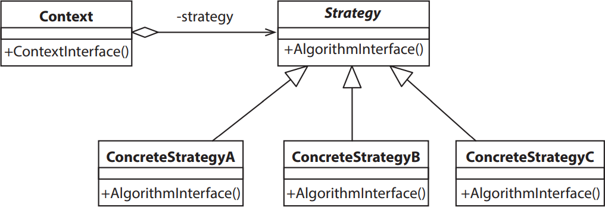

Padrões de projeto são soluções gerais para problemas frequentes de projetos de software. O diagrama
de classes UML abaixo ilustra a estrutura do padrão Strategy:

GAMMA, E. et al. Padrões de projeto: Soluções reutilizáveis de software orientado a objetos.
2. ed. Porto Alegre: Bookman, 2000 (adaptado).
A partir do modelo UML apresentado e acerca dos padrões de projeto, avalie as afirmações a seguir.
-
A Classe Strategy pode ser implementada como uma classe abstrata ou uma interface, pois
corresponde unicamente a uma abstração dos diversos tipos de estratégias definidas.
-
O padrão Strategy pode ser utilizado na implementação de classes para, por exemplo, permitir que
métodos de ordenação de coleções possam ser usados com diferentes critérios de comparação.
-
O baixo acoplamento permite que estratégias sejam incluídas ou retiradas da aplicação sem alterar
a estrutura das demais classes do sistema.
-
O uso do padrão Singleton para criação das instâncias, permitiria centralizar em um método de
criação a lógica de seleção da estratégia a ser utilizada.
É correto apenas o que se afirma em
-
I e II.
-
I e IV.
-
III e IV.
-
I, II e III.
-
II, III e IV.